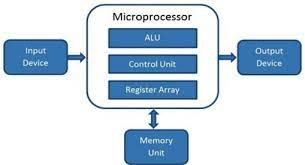
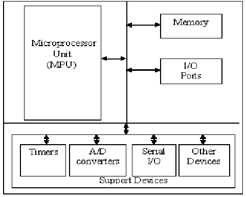

A microprocessor is a central processing unit (CPU) that is designed to execute instructions and perform arithmetic and logical operations. It is the heart of a computer system and is responsible for processing data and controlling the overall operation of the system.
Here are some key characteristics of microprocessors:
CPU Focus: A microprocessor primarily focuses on processing data and executing instructions. It is typically used in systems where the main tasks involve data processing and control, such as personal computers, servers, and high-level computing devices.
External Components: Microprocessors usually require additional external components, such as memory chips, input/output (I/O) devices, and support chips, to form a complete functional system. These external components need to be interfaced with the microprocessor for memory storage, data input/output, and other peripheral functionalities.
Flexibility: Microprocessors offer high flexibility, as they can be programmed and reprogrammed to perform a wide range of tasks. They are designed to handle general-purpose computing and can execute a variety of software applications.
A microcontroller is an integrated circuit that combines a microprocessor core with memory, input/output peripherals, and other features necessary for a standalone embedded system. It is designed to perform specific tasks and control dedicated hardware.
Here are some key characteristics of microcontrollers:
Integrated System: Microcontrollers are self-contained systems that include a microprocessor core, memory (both program and data memory), input/output ports, timers/counters, analog-to-digital converters (ADCs), and other peripherals on a single chip. These integrated components make microcontrollers suitable for low-power and cost-effective applications.
Task-Specific: Microcontrollers are designed for specific tasks or applications, such as controlling appliances, automotive systems, industrial automation, consumer electronics, and small-scale embedded systems. They are optimized to efficiently handle real-time tasks and interact with the physical world.
Limited External Components: Microcontrollers require fewer external components compared to microprocessors, as most essential peripherals are already integrated into the chip. Typically, additional components like sensors, actuators, and display units are connected directly to the microcontroller's pins.
Firmware-Based: Microcontrollers are typically programmed using firmware, which is stored in the microcontroller's program memory. The firmware defines the behavior and functionality of the microcontroller in the embedded system.